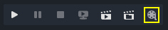
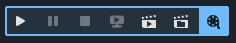
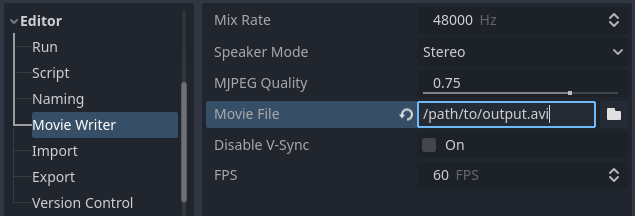
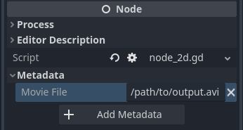

Tạo phim
Godot có thể ghi video và âm thanh không theo thời gian thực từ bất kỳ dự án 2D hoặc 3D nào. Kiểu ghi này còn được gọi là kết xuất ngoại tuyến (offline rendering). Có nhiều tình huống mà điều này hữu ích:
Ghi trailer game để quảng bá.
Ghi các đoạn cắt cảnh sẽ được hiển thị dưới dạng video quay sẵn trong game hoàn chỉnh. Điều này cho phép dùng cài đặt chất lượng cao hơn (đổi lại dung lượng file lớn hơn), bất kể phần cứng của người chơi.
Ghi các hoạt ảnh được tạo theo thủ tục (procedural) hoặc motion design. Người dùng vẫn có thể tương tác trong khi ghi video, và cũng có thể ghi kèm âm thanh (dù bạn sẽ không nghe được âm thanh trong lúc đang ghi video).
So sánh kết quả hình ảnh của các cài đặt đồ họa, shader hoặc kỹ thuật kết xuất trong một scene có hoạt ảnh.
Với các tính năng hoạt ảnh của Godot như node AnimationPlayer, Tweener, hạt và shader, Godot có thể được dùng hiệu quả để tạo mọi loại hoạt ảnh 2D và 3D (và cả ảnh tĩnh).
Nếu bạn đã quen với quy trình làm việc của Godot, bạn có thể thấy mình làm việc hiệu quả hơn khi dùng Godot để kết xuất video so với Blender. Tuy vậy, các renderer được thiết kế cho mục đích không theo thời gian thực như Cycles và Eevee có thể cho hình ảnh đẹp hơn (đổi lại thời gian kết xuất lâu hơn).
So với ghi video theo thời gian thực, ghi không theo thời gian thực có một số ưu điểm:
Dùng bất kỳ cài đặt đồ họa nào (kể cả những cài đặt cực kỳ nặng) bất kể khả năng phần cứng của bạn. Video đầu ra sẽ luôn có nhịp khung hình hoàn hảo; sẽ không bao giờ bị rớt frame hay giật hình. Phần cứng nhanh hơn sẽ giúp bạn kết xuất một hoạt ảnh nhất định trong thời gian ngắn hơn, nhưng kết quả hình ảnh vẫn giống hệt nhau.
Kết xuất ở độ phân giải cao hơn độ phân giải màn hình mà không phải dựa vào các công cụ riêng của driver như Dynamic Super Resolution của NVIDIA hay Virtual Super Resolution của AMD.
Kết xuất ở framerate cao hơn framerate mục tiêu của video, sau đó hậu xử lý để tạo motion blur chất lượng cao. Việc này cũng giúp các hiệu ứng hội tụ qua nhiều frame (như khử răng cưa theo thời gian, SDFGI và sương mù thể tích) trông đẹp hơn.
Cảnh báo
Tính năng này không được thiết kế để ghi hình theo thời gian thực trong lúc chơi game.
Người chơi nên dùng các công cụ như OBS Studio hoặc SimpleScreenRecorder để quay video gameplay, vì chúng chặn bắt compositor tốt hơn nhiều so với những gì Godot có thể làm khi dùng Vulkan hoặc OpenGL gốc.
Tuy vậy, nếu game của bạn chạy ở tốc độ gần thời gian thực khi ghi, bạn vẫn có thể dùng tính năng này (nhưng sẽ không nghe được âm thanh phát ra, vì âm thanh được lưu trực tiếp vào file video).
Bật chế độ Movie Maker
Để bật chế độ Movie Maker, nhấp vào nút "cuộn phim" ở góc trên bên phải trình chỉnh sửa trước khi chạy dự án:

Chế độ Movie Maker đang tắt, nhấp vào biểu tượng "cuộn phim" để bật
Một menu sẽ hiển thị với các tùy chọn bật chế độ Movie Maker và mở cài đặt. Biểu tượng sẽ có nền trùng với màu nhấn khi chế độ Movie Maker được bật:

Chế độ Movie Maker đang bật, nhấp lại vào biểu tượng "cuộn phim" để tắt
Trạng thái Movie Maker không được lưu lại khi thoát trình chỉnh sửa, vì vậy bạn phải bật lại chế độ Movie Maker sau khi khởi động lại trình chỉnh sửa nếu cần.
Ghi chú
Bật/tắt chế độ Movie Maker khi đang chạy dự án sẽ không có tác dụng cho đến khi dự án được khởi động lại.
Trước khi có thể ghi video bằng cách chạy dự án, bạn vẫn cần cấu hình đường dẫn file đầu ra. Đường dẫn này có thể được đặt cho tất cả scene trong Project Settings:

Cài đặt dự án của Movie Maker (với tùy chọn Advanced được bật)
Ngoài ra, bạn có thể đặt đường dẫn file đầu ra cho từng scene bằng cách thêm một metadata kiểu String có tên movie_file vào node gốc của scene. Metadata này chỉ được dùng khi main scene được đặt là scene đó, hoặc khi chạy trực tiếp scene bằng cách nhấn F6 (Cmd + R trên macOS).

Giao diện Inspector sau khi tạo metadata movie_file kiểu String
Đường dẫn được chỉ định trong cài đặt dự án hoặc metadata có thể là đường dẫn tuyệt đối, hoặc tương đối so với thư mục gốc của dự án.
Khi bạn đã cấu hình và bật chế độ Movie Maker, nó sẽ tự động được dùng khi chạy dự án từ trình chỉnh sửa.
Sử dụng qua dòng lệnh
Movie Maker cũng có thể được bật từ dòng lệnh:
godot --path /path/to/your_project --write-movie output.avi
Nếu đường dẫn đầu ra là tương đối, nó sẽ tương đối so với thư mục dự án, chứ không phải thư mục làm việc hiện tại. Trong ví dụ trên, file sẽ được ghi vào /path/to/your_project/output.avi. Hành vi này tương tự đối số dòng lệnh --export-release.
Vì độ phân giải đầu ra của Movie Maker được xác định bởi kích thước viewport, bạn có thể điều chỉnh kích thước cửa sổ khi khởi động để ghi đè nó nếu dự án dùng chế độ stretch disabled hoặc canvas_items:
godot --path /path/to/your_project --write-movie output.avi --resolution 1280x720
Lưu ý rằng kích thước cửa sổ bị giới hạn bởi độ phân giải màn hình của bạn. Xem Kết xuất ở độ phân giải cao hơn độ phân giải màn hình nếu bạn cần ghi video ở độ phân giải cao hơn độ phân giải màn hình.
FPS khi ghi cũng có thể được ghi đè qua dòng lệnh mà không cần sửa Project Settings:
godot --path /path/to/your_project --write-movie output.avi --fixed-fps 30
Ghi chú
Các đối số dòng lệnh --write-movie và --fixed-fps đều có sẵn trong các dự án đã xuất. Không thể bật/tắt chế độ Movie Maker khi dự án đang chạy, nhưng bạn có thể dùng phương thức OS.execute() để chạy một instance thứ hai của dự án đã xuất, instance này sẽ ghi ra file video.
Chọn định dạng đầu ra
Các định dạng đầu ra được cung cấp bởi lớp MovieWriter. Godot có sẵn 3 MovieWriters, và có thể triển khai thêm qua các extension:
OGV (khuyên dùng)
Container OGV với Theora cho video và Vorbis cho âm thanh. Định dạng này nén video và âm thanh có mất dữ liệu, cân bằng tốt giữa kích thước file và tốc độ mã hóa, với chất lượng hình ảnh tốt hơn MJPEG. Nó có 4 mức tốc độ có thể điều chỉnh qua Editor > Movie Writer > Encoding Speed, trong đó mức nhanh nhất có tốc độ tương đương AVI nhưng nén tốt hơn. Ở các mức tốc độ chậm hơn, nó có thể nén tốt hơn nữa mà vẫn giữ nguyên chất lượng hình ảnh. Chất lượng nén có mất dữ liệu có thể điều chỉnh qua Editor > Movie Writer > Video Quality cho video và Editor > Movie Writer > Audio Quality cho âm thanh.
Keyframe Interval có thể điều chỉnh qua Editor > Movie Writer > Keyframe Interval. Trong một số trường hợp, tăng giá trị này có thể cải thiện hiệu quả nén mà không có nhược điểm gì.
File kết quả có thể xem trong Godot bằng VideoStreamPlayer và hầu hết trình phát video, nhưng không xem được trên trình duyệt web. OGV không hỗ trợ độ trong suốt.
Để dùng OGV, hãy chỉ định đường dẫn đến file .ogv sẽ được tạo trong cài đặt dự án Editor > Movie Writer > Movie File.
Ghi chú
OGV chỉ có thể được ghi trong các bản build trình chỉnh sửa. Mặt khác, phát OGV thì khả dụng trong cả bản build trình chỉnh sửa lẫn export template.
AVI
Container AVI với MJPEG cho video và âm thanh không nén. Định dạng này nén video có mất dữ liệu, cho kích thước file trung bình và mã hóa nhanh. Chất lượng nén có mất dữ liệu có thể điều chỉnh qua Editor > Movie Writer > Video Quality.
File kết quả có thể được xem trong hầu hết trình phát video, nhưng phải được chuyển sang định dạng khác để xem trên web hoặc trong Godot bằng node VideoStreamPlayer. MJPEG không hỗ trợ độ trong suốt. Đầu ra AVI hiện bị giới hạn ở kích thước file tối đa 4 GB.
Để dùng AVI, hãy chỉ định đường dẫn đến file .avi sẽ được tạo trong cài đặt dự án Editor > Movie Writer > Movie File.
PNG
Chuỗi ảnh PNG cho video và WAV cho âm thanh. Hỗ trợ nén video không mất dữ liệu, đổi lại dung lượng file lớn và mã hóa chậm. Định dạng này được thiết kế để mã hóa thành file video bằng công cụ bên ngoài sau khi ghi.
Độ trong suốt được hỗ trợ, nhưng viewport gốc bắt buộc phải có thuộc tính transparent_bg được đặt thành true thì độ trong suốt mới hiển thị trên ảnh đầu ra. Bạn có thể làm điều này bằng cách bật cài đặt dự án nâng cao Rendering > Transparent Background. Bạn cũng có thể bật thêm Display > Window > Size > Transparent và Display > Window > Per Pixel Transparency > Enabled để xem trước độ trong suốt trong khi ghi video, nhưng không bắt buộc phải bật chúng để ảnh đầu ra có độ trong suốt.
Để dùng PNG, hãy chỉ định một file .png sẽ được tạo trong cài đặt dự án Editor > Movie Writer > Movie File. File .wav được tạo ra sẽ có cùng tên với file .png (không tính phần mở rộng).
Tùy chỉnh
Nếu bạn cần mã hóa trực tiếp sang một định dạng khác hoặc chuyển luồng dữ liệu qua phần mềm bên thứ ba, bạn có thể mở rộng lớp MovieWriter để tạo movie writer của riêng mình. Vì lý do hiệu năng, việc này thường nên được thực hiện bằng GDExtension.
Cấu hình
Trong mục Editor > Movie Writer của Project Settings, có một số tùy chọn bạn có thể cấu hình. Một số tùy chọn chỉ hiển thị sau khi bật nút Advanced ở góc trên bên phải hộp thoại Project Settings.
Mix Rate Hz: Tần số trộn âm thanh dùng cho âm thanh được ghi khi ghi phim. Giá trị này có thể khác với tần số trộn của dự án, nhưng phải chia hết cho FPS khi ghi để tránh âm thanh bị lệch dần theo thời gian.
Speaker Mode: Chế độ loa dùng cho âm thanh được ghi khi ghi phim (stereo, 5.1 surround hoặc 7.1 surround).
Video Quality: Chất lượng hình ảnh dùng khi ghi video ra file OGV hoặc AVI, trong khoảng từ
0.01đến1.0(bao gồm cả hai đầu). Giá trị chất lượng cao hơn cho kết quả đẹp hơn nhưng kích thước file lớn hơn. Giá trị khuyên dùng nằm trong khoảng0.75đến0.9. Ngay cả ở chất lượng1.0, việc nén vẫn có mất dữ liệu. Cài đặt này không ảnh hưởng đến chất lượng âm thanh và bị bỏ qua khi ghi ra chuỗi ảnh PNG.Movie File: Đường dẫn đầu ra của phim. Có thể là đường dẫn tuyệt đối hoặc tương đối so với thư mục gốc dự án.
Disable V-Sync: Nếu bật, sẽ yêu cầu tắt V-Sync khi ghi phim. Điều này có thể giúp ghi video nhanh hơn nếu phần cứng đủ nhanh để kết xuất, mã hóa và lưu video ở framerate cao hơn tần số quét của màn hình. Cài đặt này không có tác dụng nếu hệ điều hành hoặc driver đồ họa ép bật V-Sync mà không cho ứng dụng tắt.
FPS: Số frame được kết xuất mỗi giây trong phim đầu ra. Giá trị cao hơn cho hoạt ảnh mượt hơn, đổi lại thời gian kết xuất lâu hơn và dung lượng file đầu ra lớn hơn. Hầu hết nền tảng lưu trữ video không hỗ trợ FPS cao hơn 60, nhưng bạn có thể dùng giá trị cao hơn và tận dụng nó để tạo motion blur.
Audio Quality: Chất lượng âm thanh dùng khi ghi video ra file OGV, trong khoảng từ
-0.1đến1.0(bao gồm cả hai đầu). Giá trị chất lượng cao hơn cho âm thanh tốt hơn nhưng kích thước file lớn hơn một chút. Giá trị khuyên dùng nằm trong khoảng0.3đến0.5. Ngay cả ở chất lượng1.0, việc nén vẫn có mất dữ liệu.Encoding Speed: Mức tốc độ dùng khi ghi video ra file OGV. Mức tốc độ nhanh hơn có hiệu quả nén thấp hơn. Chất lượng hình ảnh gần như không đổi.
Keyframe Interval: Còn gọi là GOP (Group Of Pictures), là số inter-frame tối đa dùng khi ghi ra file OGV. Giá trị cao hơn có thể cải thiện hiệu quả nén mà không giảm chất lượng, nhưng đổi lại việc tua video sẽ chậm hơn.
Ghi chú
Khi dùng chế độ stretch disabled hoặc 2d, độ phân giải của file đầu ra được xác định bởi kích thước cửa sổ. Hãy nhớ thay đổi kích thước cửa sổ trước khi màn hình splash kết thúc. Để làm điều này, bạn nên điều chỉnh các cài đặt dự án nâng cao Display > Window > Size > Window Width Override và Window Height Override.
Xem thêm Kết xuất ở độ phân giải cao hơn độ phân giải màn hình.
Thoát chế độ Movie Maker
Để thoát an toàn một dự án đang dùng chế độ Movie Maker, hãy dùng nút X ở phía trên cửa sổ, hoặc gọi get_tree().quit() trong script. Bạn cũng có thể dùng đối số dòng lệnh --quit-after N, trong đó N là số frame cần kết xuất trước khi thoát.
Không nên nhấn F8 (Cmd + . trên macOS) hoặc nhấn Ctrl + C trong terminal đang chạy Godot, vì làm vậy sẽ tạo ra file AVI có định dạng sai và không có thông tin thời lượng. Với chuỗi ảnh PNG, các ảnh PNG sẽ không bị ảnh hưởng xấu, nhưng file WAV đi kèm vẫn sẽ thiếu thông tin thời lượng. File OGV có thể có track video và âm thanh với thời lượng hơi khác nhau nhưng vẫn hợp lệ.
Một số trình phát video có thể vẫn phát được file AVI hoặc WAV với hình ảnh và âm thanh bình thường. Tuy nhiên, các phần mềm sử dụng file AVI hoặc WAV như trình dựng video có thể không mở được file. Dùng chương trình chuyển đổi video có thể giúp ích trong những trường hợp đó.
Nếu bạn dùng AnimationPlayer để điều khiển một "hành động chính" trong scene (chẳng hạn chuyển động camera), bạn có thể bật thuộc tính Movie Quit On Finish trên node AnimationPlayer đó. Khi được bật, thuộc tính này sẽ khiến Godot tự thoát khi một hoạt ảnh phát xong và engine đang chạy ở chế độ Movie Maker. Lưu ý rằng thuộc tính này không có tác dụng với hoạt ảnh lặp. Vì vậy, bạn cần đảm bảo hoạt ảnh được đặt là không lặp.
Sử dụng cài đặt đồ họa chất lượng cao
Feature tag movie có thể được dùng để ghi đè các cài đặt dự án cụ thể. Điều này hữu ích để bật các cài đặt đồ họa chất lượng cao vốn không đủ nhanh để chạy ở tốc độ thời gian thực trên phần cứng của bạn. Hãy nhớ rằng đặt mọi cài đặt ở mức tối đa vẫn có thể làm chậm tốc độ lưu phim, đặc biệt khi ghi ở độ phân giải cao. Vì vậy, bạn vẫn chỉ nên tăng cài đặt đồ họa nếu chúng tạo ra khác biệt đáng kể trên ảnh đầu ra.
Feature tag này cũng có thể được kiểm tra trong script để tăng các cài đặt chất lượng được đặt trong resource Environment. Ví dụ, để cải thiện thêm chi tiết SDFGI và giảm rò rỉ ánh sáng:
extends Node3D
func _ready():
if OS.has_feature("movie"):
# When recording a movie, improve SDFGI cell density
# without decreasing its maximum distance.
get_viewport().world_3d.environment.sdfgi_min_cell_size *= 0.25
get_viewport().world_3d.environment.sdfgi_cascades = 8
using Godot;
public partial class MyNode3D : Node3D
{
public override void _Ready()
{
if (OS.HasFeature("movie"))
{
// When recording a movie, improve SDFGI cell density
// without decreasing its maximum distance.
GetViewport().World3D.Environment.SdfgiMinCellSize *= 0.25f;
GetViewport().World3D.Environment.SdfgiCascades = 8;
}
}
}
Kết xuất ở độ phân giải cao hơn độ phân giải màn hình
Chất lượng kết xuất tổng thể có thể được cải thiện đáng kể bằng cách kết xuất ở độ phân giải cao như 4K hoặc 8K.
Ghi chú
Với kết xuất 3D, Godot cung cấp cài đặt dự án nâng cao Rendering > Scaling 3D > Scale, có thể đặt lớn hơn 1.0 để có khử răng cưa siêu mẫu. Kết quả kết xuất 3D sau đó sẽ được downsample khi vẽ lên viewport. Đây là một hình thức khử răng cưa tốn tài nguyên nhưng chất lượng cao, mà không làm tăng độ phân giải đầu ra cuối cùng.
Hãy cân nhắc dùng cài đặt dự án này trước, vì nó tránh làm chậm tốc độ ghi phim và tăng dung lượng file đầu ra so với việc thực sự tăng độ phân giải đầu ra.
Nếu bạn muốn kết xuất 2D ở độ phân giải cao hơn, hoặc thực sự cần số điểm ảnh thô đầu ra cao hơn cho kết xuất 3D, bạn có thể tăng độ phân giải vượt quá mức màn hình cho phép.
Mặc định, Godot dùng chế độ stretch disabled trong các dự án. Nếu dùng chế độ stretch disabled hoặc canvas_items, kích thước cửa sổ sẽ quyết định độ phân giải video đầu ra.
Ngược lại, nếu dự án được cấu hình để dùng chế độ stretch viewport, độ phân giải viewport sẽ quyết định độ phân giải video đầu ra. Độ phân giải viewport được đặt bằng các cài đặt dự án Display > Window > Size > Viewport Width và Viewport Height. Bạn có thể dùng cách này để kết xuất video ở độ phân giải cao hơn độ phân giải màn hình.
Để làm cửa sổ nhỏ hơn trong lúc ghi mà không ảnh hưởng đến độ phân giải video đầu ra, bạn có thể đặt các cài đặt dự án nâng cao Display > Window > Size > Window Width Override và Window Height Override thành giá trị lớn hơn 0.
Để chỉ áp dụng việc ghi đè độ phân giải khi ghi phim, bạn có thể ghi đè các cài đặt đó bằng feature tag movie.
Các bước hậu xử lý
Dưới đây là một số bước hậu xử lý phổ biến.
Ghi chú
Khi dùng nhiều bước hậu xử lý, hãy cố gắng thực hiện tất cả trong một lệnh FFmpeg duy nhất. Điều này giúp tiết kiệm thời gian mã hóa và cải thiện chất lượng nhờ tránh nhiều lần mã hóa có mất dữ liệu.
Chuyển đổi video OGV/AVI sang MP4
Mặc dù một số nền tảng như YouTube hỗ trợ tải lên trực tiếp file AVI, nhiều nền tảng khác sẽ yêu cầu một bước chuyển đổi trước. HandBrake (GUI) và FFmpeg (CLI) là những công cụ mã nguồn mở phổ biến cho mục đích này. FFmpeg khó học hơn nhưng mạnh mẽ hơn.
Lệnh dưới đây chuyển đổi video OGV/AVI sang video MP4 (H.264) với Constant Rate Factor (CRF) bằng 15. Kết quả là một file tương đối lớn, nhưng rất phù hợp cho các nền tảng sẽ mã hóa lại video của bạn để giảm kích thước (như hầu hết các trang chia sẻ video):
ffmpeg -i input.avi -crf 15 output.mp4
Để có file nhỏ hơn với chất lượng thấp hơn, hãy tăng giá trị CRF trong lệnh trên.
Để có file với tỉ lệ dung lượng/chất lượng tốt hơn (đổi lại thời gian mã hóa chậm hơn), hãy thêm -preset veryslow trước -crf 15 trong lệnh trên. Ngược lại, có thể dùng -preset veryfast để mã hóa nhanh hơn, đổi lại tỉ lệ dung lượng/chất lượng kém hơn.
Chuyển chuỗi ảnh PNG + âm thanh WAV thành video
Nếu bạn chọn ghi chuỗi ảnh PNG kèm một file WAV, bạn cần chuyển chúng thành video trước khi có thể dùng ở nơi khác.
Tên file của chuỗi ảnh PNG do Godot tạo ra luôn chứa 8 chữ số, bắt đầu từ 0 với các số được thêm số 0 ở đầu. Nếu bạn chỉ định đường dẫn đầu ra folder/example.png, Godot sẽ ghi folder/example00000000.png, folder/example00000001.png, v.v. vào thư mục đó. Âm thanh sẽ được lưu tại folder/example.wav.
FPS được chỉ định bằng đối số -r. Giá trị này phải khớp với FPS đã chỉ định khi ghi. Nếu không, video sẽ trông như bị chậm lại hoặc tua nhanh, và âm thanh sẽ lệch so với video.
ffmpeg -r 60 -i input%08d.png -i input.wav -crf 15 output.mp4
Nếu bạn đã ghi chuỗi ảnh PNG có bật độ trong suốt, bạn cần dùng định dạng video hỗ trợ lưu độ trong suốt. MP4/H.264 không hỗ trợ lưu độ trong suốt, vì vậy bạn có thể dùng WebM/VP9 để thay thế:
ffmpeg -r 60 -i input%08d.png -i input.wav -c:v libvpx-vp9 -crf 15 -pix_fmt yuva420p output.webm
Cắt video
Bạn có thể cắt bỏ những phần video không muốn giữ sau khi ghi. Ví dụ, để bỏ mọi thứ trước giây thứ 12.1 và chỉ giữ 5.2 giây video tính từ thời điểm đó:
ffmpeg -i input.avi -ss 00:00:12.10 -t 00:00:05.20 -crf 15 output.mp4
Bạn cũng có thể cắt video bằng công cụ có giao diện đồ họa LosslessCut.
Thay đổi kích thước video
Lệnh sau thay đổi kích thước video thành cao 1080 pixel (1080p), đồng thời giữ nguyên tỉ lệ khung hình hiện có:
ffmpeg -i input.avi -vf "scale=-1:1080" -crf 15 output.mp4
Giảm framerate
Lệnh sau đổi framerate của video thành 30 FPS, loại bỏ bớt một số frame gốc nếu video đầu vào có nhiều frame hơn:
ffmpeg -i input.avi -r 30 -crf 15 output.mp4
Tạo motion blur tích lũy bằng FFmpeg
Godot không hỗ trợ sẵn motion blur, nhưng vẫn có thể tạo hiệu ứng này trong các video đã ghi.
Nếu ghi video ở tốc độ khung hình là bội số của tốc độ khung hình gốc, bạn có thể pha trộn các khung hình lại với nhau rồi giảm tốc độ khung hình để tạo ra video có accumulation motion blur (làm mờ chuyển động tích lũy). Hiệu ứng motion blur này có thể trông rất đẹp, nhưng có thể mất nhiều thời gian để tạo vì bạn phải kết xuất nhiều khung hình hơn mỗi giây (cộng thêm thời gian hậu kỳ).
Ví dụ với video nguồn 240 FPS, tạo motion blur 4× và giảm framerate đầu ra xuống 60 FPS:
ffmpeg -i input.avi -vf "tmix=frames=4, fps=60" -crf 15 output.mp4
Việc này cũng giúp các hiệu ứng hội tụ qua nhiều frame (như khử răng cưa theo thời gian, SDFGI và sương mù thể tích) hội tụ nhanh hơn và do đó trông đẹp hơn, vì chúng có thể làm việc với nhiều dữ liệu hơn trong cùng một khoảng thời gian. Xem Giảm framerate nếu bạn muốn có lợi ích này mà không thêm motion blur.